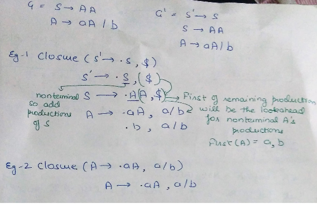
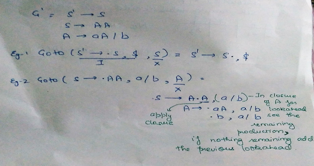
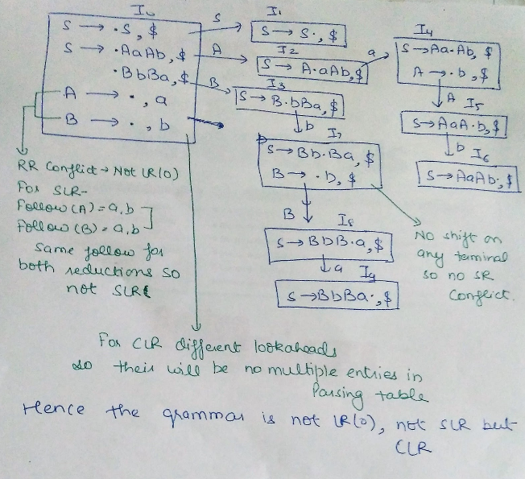
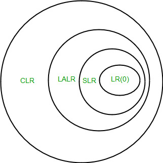

在本文中，我们将讨论SLR解析器，CLR解析器和LALR解析器，它们是Bottom Up解析器的一部分。
SLR解析器
SLR解析器类似于LR（0）解析器，除了减少的条目。 减少的产品只写在生产减少的变量的FOLLOW中。
构建SLR解析表 -
- 构造C = {I 0 ，I 1 ，...... I n }，G'的LR（0）项集合的集合。
- State i由Ii构建。 状态i的解析动作确定如下：
- 如果[A - >？.a？ ]在I i和GOTO（I i ，a）= I j ，然后将ACTION [i，a]设置为“shift j”。 这里必须是终端。
- 如果[A - >？。]在I i中 ，则在FOLLOW（A）中为所有a设置ACTION [i，a]为“reduce A - >？”; 这里A可能不是S'。
- [S - > S.]是否在I i中 ，然后将action [i，$]设置为“accept”。 如果上述规则产生任何冲突动作，我们说语法不是SLR。
- 使用规则为所有非终结符A构建状态i的goto过渡：
如果GOTO（I i ，A）= I j则GOTO [i，A] = j。 - 规则2和3未定义的所有条目都会出错。
例如：
如果在解析表中我们有多个条目，则说它是冲突。
Consider the grammar E -> T+E | T T ->id Augmented grammar - E' -> E E -> T+E | T T -> id

注1 - 对于GATE，我们不必绘制表，在GOTO图中只查找在一个状态下一起发生的reduce和shift。如果两次减少，如果两个减少的产生的跟随有一些共同点那么它将导致表中的多个条目，因此不是SLR。 在一个班次和一个减少的情况下，如果它们是在终端上的那个状态的GOTO操作，其是减少的产量，则将导致多个条目，因此不是SLR。
注2 - 每个SLR语法都是明确的，但它们是许多不是单反的明确语法。
CLR PARSER
在SLR方法中，我们使用LR（0））项目。 在CLR解析中，我们将使用LR（1）项。 LR（k）项被定义为使用长度为k的前瞻的项。 因此，LR（1）项目由两部分组成：LR（0）项目和与项目相关联的前瞻。
LR（1）解析器是更强大的解析器。
对于LR（1）项，我们修改了Closure和GOTO函数。
关闭操作
Closure(I) repeat for (each item [ A -> ?.B?, a ] in I ) for (each production B -> ? in G') for (each terminal b in FIRST(?a)) add [ B -> .? , b ] to set I; until no more items are added to I; return I;
让我们用一个例子来理解它 -

{kind=link}
转到操作
Goto(I, X) Initialise J to be the empty set; for ( each item A -> ?.X?, a ] in I ) Add item A -> ?X.?, a ] to se J; /* move the dot one step */ return Closure(J); /* apply closure to the set */
例如-

LR（1）项目
{kind=link}
Void items(G') Initialise C to { closure ({[S' -> .S, $]})}; Repeat For (each set of items I in C) For (each grammar symbol X) if( GOTO(I, X) is not empty and not in C) Add GOTO(I, X) to C; Until no new set of items are added to C;
构建GOTO图
- 状态I 0 - 增强LR（1）项的闭包。
- 使用I 0在DFA的帮助下找到所有LR（1）项集合
- 将DFA转换为LR（1）解析表
构建CLR解析表 -
输入 - 增强语法G'
- 构造C = {I 0 ，I 1 ，...... I n }，G'的LR（0）项集合的集合。
- State i由Ii构建。 状态i的解析动作确定如下：
i）如果[A - >？.a？，b]在I i和GOTO（I i ，a）= I j中 ，则将ACTION [i，a]设置为“shift j”。 这里必须是终端。
ii）如果[A - >？。 ，a]在I i中 ，A≠S，然后将ACTION [i，a]设置为“reduce A - >？”。
iii）[S - > S.，$]是否在I i中 ，然后将action [i，$]设置为“accept”。
如果上述规则产生任何冲突行为，我们会说语法是
不是CLR。 - 使用规则为所有非终结符A构造状态i的goto过渡：如果GOTO（I i ，A）= I j则GOTO [i，A] = j。
- 规则2和3未定义的所有条目都会出错。
例如：
Consider the following grammar S -> AaAb | BbBa A -> ? B -> ? Augmented grammar - S' -> S S -> AaAb | BbBa A -> ? B -> ? GOTO graph for this grammar will be -

注意 - 如果一个州有两个减少并且两个都具有相同的前瞻，那么它将在解析表中的多个条目中发生冲突。 如果一个状态有一个减少并且它们是在终端上从该状态转移到与减少的前瞻相同的那么它将导致解析表中的多个条目因此冲突。
LALR PARSER
LALR解析器与CLR解析器相同，但有一点不同。 在CLR解析器中，如果两个状态仅在前瞻中不同，那么我们在LALR解析器中组合这些状态。 在最小化之后，如果解析表没有冲突，那么语法也是LALR。
例如：
{kind=link}
consider the grammar S ->AA A -> aA | b Augmented grammar - S' -> S S ->AA A -> aA | b
{kind=link}
重要笔记
1.即使CLR解析器没有RR冲突，但LALR可能包含RR冲突。
2.如果状态数LR（0）= n1，
状态数SLR = n2，
状态数LALR = n3，
状态数CLR = n4然后，
n1 = n2 = n3 <= n4

{kind=link}